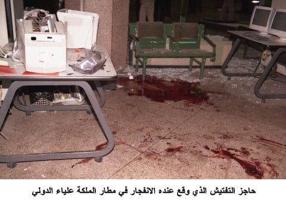
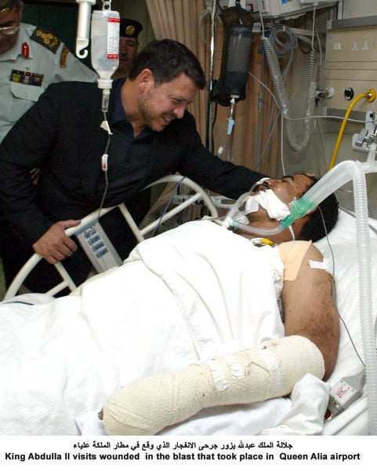
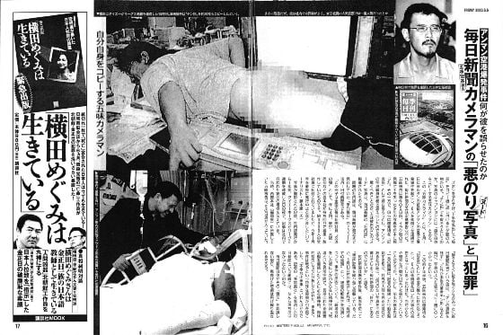

2003년 5월
이라크 전쟁 취재를 마치고 귀국길에 오른 마아니치 신문의 기자 고미 히로키
공항에서 수하물 검색 와중에 그의 수하물이 폭발하는 사건이 벌어짐

이 폭발로 인해 1명이 사망하고 여러명이 중상을 입게 됨
어이가 없게도 이 기자는 집속탄의 자탄 하나를 폭발 할 위험이 없다 생각하고 기념품으로 챙겼고
이게 공항 검색 중에 폭발 해버린 것이었음

요르단 국왕 압둘라 2세가 직접 부상자들 찾아갈 정도로 큰 이슈였던 사건이었는데
이 사건으로 기자는 과실치사 혐의로 1년 6개월 깜방행을 선고 받음
이후 마이니치 신문에서 공식적으로 사과 박고 일본에서도 외교적 노력을 기울인 끝에 그 기자는 압둘라 2세의 특별사면으로 겨우 풀려나게 됨

직후 마이니치 신문에서 해고 되었고 현재는 조용히 살고 있다고 함
짤은 그 기자가 이전에 복사기로 야추를 찍는 등의 기행을 펼친 것이 신문을 통해 고로시 된 것

진짜 븅신이라는 단어밖에 안 떠오르네.ㅣ.